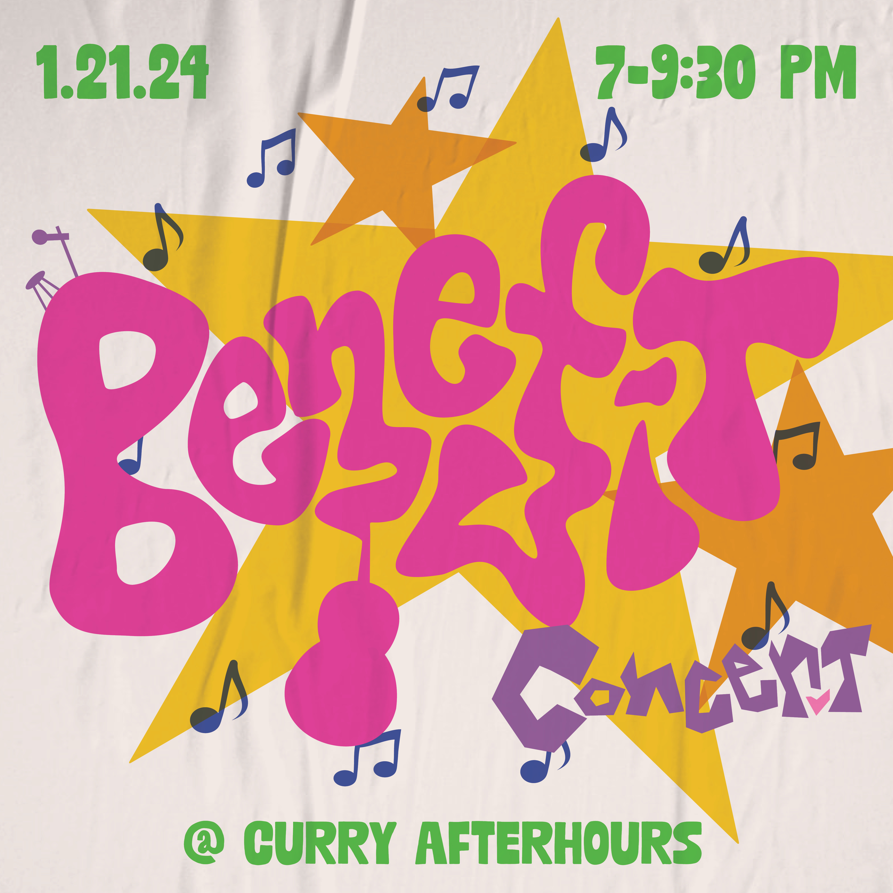

Print Design · Merchandise · Social Media Graphics · 2023–24
Barkada
A year of social content, merchandise design, and print design as Media Specialist for Northeastern University's Filipino cultural organization, Barkada, with 60+ assets across every touchpoint.


Social content
Keeping the feed alive between events.
Beyond event campaigns, I designed the full social content calendar. This included member announcements, election graphics, eboard introductions, performance promotions, and merch drops. Every post maintained Barkada's playful, community-forward energy while adapting to each moment.
